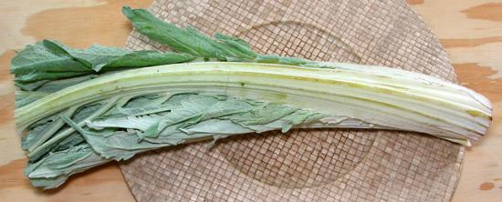

Cardoons

[Cardoni, Cardi; Chard (archaic); Wild Artichoke (from Algerian),
Artichoke Thistle; Cynara cardunculus]
This thistle, closely related to the Globe
Artichoke, is native to the drier parts of the Mediterranean basin,
from Portugal to Greece, and Morocco to Libya. The large, fleshy leaf
stems are widely used as a vegetable in Portugal, Spain, France, Italy
and North Africa. The taste is complex, interesting and artichoke-like -
if you have developed a taste for slightly bitter vegetables (a
worthwhile taste to develop).
Ecology:
Cardoons are decorative, but should not be
planted except where they will be carefully controlled. They are
aggressive weeds with wind dispersed seeds, and have pushed out native
flora in parts of California, Australia, Argentina and elsewhere.
More on Thistles
General:
Cardoons are a delicious vegetable, with a
taste sort of half way between Celery and Artichokes, combined with a
pleasant touch of bitterness. Some claim California Cardoons are too
bitter to use raw, but I have used them raw, after preparing them
by the procedure below (less the simmering), and enjoyed them.
Spain:
Cardoons are very popular, particularly in soups
and stews. White cardoons are liked there, so large fields of cardoons
have mounds of earth piled around them to blanch the stems. This method
is not used in California, where the market would not support it.
Because of the short season, the Spanish often preserve cardoon stems
in brine to be eaten the rest of the year.
Besides the stems, flower buds are collected, cooked and eaten in
Spain and Portugal. In Spain and Portugal, the pistils of the
flowers are used as a vegetable rennet in the making of some cheeses.
Italy:
Cardoons are popular in many recipes throughout
Italy. Some recipes call for raw cardoons, but the most popular is
battering them lightly and frying them in Butter or Olive Oil (depending
on region). Cardoons prepared this way are traditionally placed on the
Saint Joseph's Day alters in New Orleans, an entry port for many
Sicilians into North America.
Maghreb:
Cardoons are particularly enjoyed in Morocco
and Algeria. Usage is similar to Spain, in soups and stews, but also
with couscous.
Buying:
In North America, Cardoons are grown mainly
in California, which has the right Mediterranean climate and a strong
Portuguese, Spanish and Italian background. They are seasonal, available
in Late Fall, Winter and Spring, but may be more bitter late in their
season. Look for bunches that are firm and unblemished with unwilted
leaves. The photo specimens were purchased from a large
multi-ethnic market in Los Angeles in mid January, for 2016 US $0.99 /
pound.
Storing:
Fresh cardoon stems will keep for up to a
week in the refrigerator, loosely wrapped in plastic.
Prep:
Use caution if you have delicate hands, as the
stems can have almost invisibly tiny spines on the edges of the stalks
that can cause pain.
- Cardoons discolor immediately after being cut, so prepare a bowl of
water acidulated with Citric Acid or Lemon Juice, sufficient in size
to hold all the stems (usually cut to about 2 to 3 inches long).
- Separate the stems. Cut off a bit of the base as you would for
celery.
- Hold the cardoon against your cutting board, and with the point of a
sharp prep knife, cut a little from the edges for the full length,
on both sides to remove all traces of leaves, which are likely to be
very bitter. This will also take off the spines.
- With a sharp vegetable peeler, destring the convex side, again just
like for celery. You will have to declog your peeler quite often.
This will also reduce the bitterness.
- Most (but certainly not all) recipes ask for the cardoons to be
simmered in salted water until tender before use in the recipe,
usually 20 to 25 minutes.
- Cool, bag and refrigerate if not to be used immediately.
dy_cardooz* 160118 - www.clovegarden.com
©Andrew Grygus - agryg@clovegarden.com - Photos
on this page not otherwise credited © cg1
- Linking to and non-commercial use of this page permitted